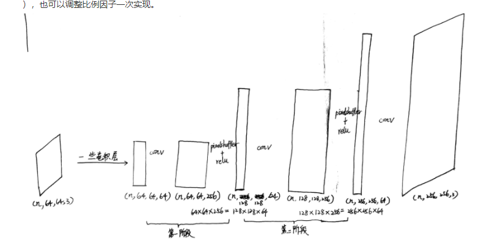
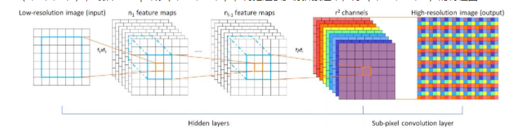

pixelshuffle#
上采样可以理解为在同一个位置，原来只是以1:1的比例提取信息，而现在以1:4的比例提取信息，提取信息的频率更高了，所以能反映的细节也就更多。对于tensor来说，在同一个位置多提取信息，也就是通过卷积生成通道数更多的tensor。具体过程为（以一个（n,64,64,64）的特征图为例）
- 通过卷积，得到通道数倍增的特征图（n,64,64,256）
- 将特征图切割成若干份，对每一份（n,64,64,4）的像素点进行重新排列,reshape成(n,64,64,2,2），再reshape成（n,64,2,64,2），最后reshape成（n,128,128,1），再把这么多份拼接起来，得（n,128,128,64）的特征图


upsample#
插值方法
转置卷积(ConvTranspose2d)#
填充0后做卷积
参考资料#
上采样，上池化，反卷积 - OliYoung - 博客园 (cnblogs.com)
PixelShuffler原理学习笔记 - 程序员大本营 (pianshen.com)
pytorch中的上采样（上采样，转置卷积，上池化，PixelShuffle） - 那抹阳光1994 - 博客园 (cnblogs.com)